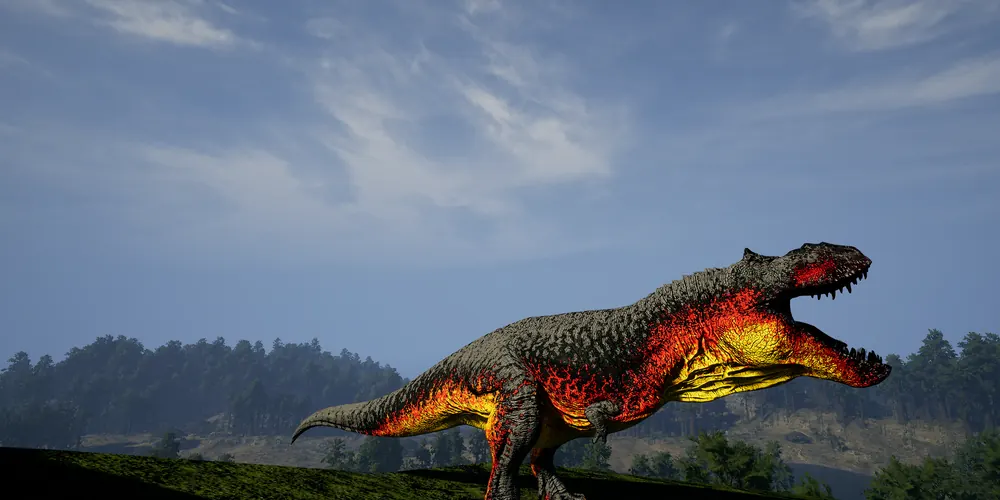
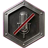
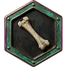
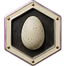
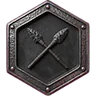
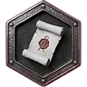
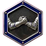
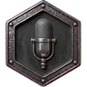

How to join the clan
Three steps inside our Spanish-speaking Discord server. Joining is free: you only need to own The Isle on Steam and have a Discord account.
First steps
From zero to Recruit
Join and read the rules
Join our Discord (opens in a new tab) and read the #normas channel: being on the server means you accept them. You can also read them here on the website.
Fill in the application
In the #solicitudes channel, choose Solicitud de ingreso from the menu. The bot will ask you a few questions by direct message, so keep your DMs open.
Wait for review
The staff reviews your application. If accepted, you get the Recluta (Recruit) rank and the clan and voice channels open up.

No mic? No problem: join a voice channel and type in its chat. The bot joins by itself and reads it aloud, naming the speaker first. Use/set nick to choose what it calls you.
Now you are a Recruit
Your first week
What to do right after joining, so the pack gets to know you and you don’t miss the hunt.
Introduce yourself and get the alerts
Tell us who you are and which dinos you play in the introductions channel; every channel is in the index pinned in #bienvenida. Then, in Canales y roles → Personalizar (Channels & Roles → Customize), answer «Sí, avisadme» (“Yes, notify me”) to get the 🔔 Cacerías role.
Add us on Asura Nexus
It is a website for Evrima players, with a live map and dino storage; the clan ranking data comes from it. Post your profile link in #perfiles so we can all add each other, and join the clan group on Nexus (the link is in #ranking): that is the only way to show up in the weekly ranking.
Come to the Saturday hunt
Answer Wednesday’s poll in #general, check you’re on Evrima on Steam and get your dino ready with its guide entry and the combat guide. See you in Cacería 1: time and countdown.

From Recruit to Member. After one or two active weeks, following the rules and playing in a group. The staff decides promotions and you don’t ask for them: every rank is on The clan.Before you play
Getting started on the Asura server
This is what the official Asura website (opens in a new tab) says as of . It is their site, not ours: if anything changes, theirs wins.

Asura 1
“Start here if you’re new”: the server to begin on, about survival.

Asura 2
PvP: “Built for big fights”, with the Dino Lab and a market.
Lottery and map
A free lottery ticket every day. The free Asura Nexus plan includes the live map.

Safelog before you buy or change anything. Their site says “Always safelog before using any buy, request, storage save/load, or skin change”: before buying, requesting something, saving or loading from storage or changing a skin, safelog first. The safelog has a 45-second timer.
Check the rules there. Asura sets its own rules and servers: read them on its official website (opens in a new tab) before you play.The server
What’s on our Discord server
This is how our Discord is organised (in Spanish). The pack and voice channels open once the staff accepts you as a Recruit.
Information
#bienvenida to start, #normas (rules), #anuncios with official news (ranks and promotions pinned), #solicitudes to apply and a channel to introduce yourself.

The pack
#general to chat, clan ideas and votes, #wiki with every dino’s guide, clips, #galería (gallery), nests and defence shifts, #ranking, #perfiles (profiles) and #batallas (battles).

Voice
Cacería 1 and another channel for hunting groups, carnivore, herbivore and human games, a quiet chat, one to cry over your deaths and an AFK one.
FAQ
Frequently asked questions
Before you join
How do I join the clan?
Join our Discord, read the rules, fill in the application from the bot menu and wait for the staff to review it. If accepted, you start as a Recruit. The three steps are explained above.
Looking for people to play The Isle with in Spanish?
You’re in the right place. Call it a clan, group, tribe or community: at GARRA IBÉRICA we play The Isle Evrima as a pack, with players from Spain and Latin America and voice on our Discord server. Joining takes three steps.
Are you recruiting new players?
Yes, recruitment is open. We look for consistent players and good teammates; experience comes from playing with the pack.
Do I need to speak Spanish?
No. Spanish is what you’ll hear most in the clan, but it isn’t a requirement. Our Discord’s main posts come in Spanish and English, and the combat guide teaches you the four calls we use.
Does it cost anything to join?
No. Joining the clan and the Discord is free. You only need to own The Isle on Steam (opens in a new tab), on its Evrima version.
I’m a beginner in The Isle. Can I join?
Yes. The clan’s veterans help and guide recruits, and you learn much faster in a group. To get started: switch to Evrima on Steam, see how to get started on Asura, pick a species in the dinosaur guide and learn what to eat.
Do I need a microphone?
No. You can type in the voice channel chat and a bot reads it out loud, naming the speaker first.
Can I join from Latin America (LATAM)?
Yes. The clan started in Spain, but it is open to any player, wherever they play from: Mexico, Argentina, Colombia, Chile, Peru or any other country. You can check the hunt time in yours on the clan hunt page.
Is GARRA IBÉRICA a Spanish or Latin American The Isle server?
No. We are a clan: a community of players who organise on Discord to play The Isle Evrima together on an unofficial server.
What are The Isle Evrima and Legacy?
The Isle is a survival game for PC, on Steam, where you play as a carnivore, herbivore or omnivore dinosaur. Evrima is its current version and Legacy the old one. The clan plays Evrima.
How do I switch to Evrima on Steam?
If your game opens Legacy, the old version, you need to switch, because the clan plays Evrima. In your Steam library, open The Isle’s page, click the gear icon, open Properties and go to Betas; there, choose evrima (“EVRIMA Public Branch”).
Which server do you play on?
On Asura, an unofficial The Isle Evrima server. Its combat rules, which nobody in the clan breaks, are in the combat guide. If it is your first time there, see getting started on Asura.
In the clan
When is the clan hunt?
Every Saturday at 22:00 Spanish mainland time (21:00 in the UK), in the Cacería 1 voice channel. In Latin America it falls between 13:00 and 18:00, depending on the country and the time of year; the exact time in your country is on the clan hunt page. Press “Interested” on the Discord event and Discord will remind you.
How do I hear about each hunt?
Get the 🔔 Cacerías role: on the Discord, in Canales y roles → Personalizar (Channels & Roles → Customize), answer «Sí, avisadme» (“Yes, notify me”). On Saturday, two hours before, the reminder in #general mentions you. On Wednesday the poll to say whether you are coming is posted there.
Can I play as both a carnivore and a herbivore?
Yes. The clan has players of both types, and we have a guide for each dinosaur with recommended mutations where there is a reliable source.
How do I group up with friends in The Isle?
Hold in-game call 2: it invites to the group. How many of you fit depends on the species: see the list of dinosaurs. The other calls are in the combat guide.
How do I show up in the weekly ranking?
Join the clan group on Asura Nexus: the link is in the #ranking channel. The ranking covers the last 7 days and a new one starts every Monday; it is explained on the clan hunt page.
How do I rank up?
By playing. Time counts, but above all how you play and how you treat the pack. Promotions are decided by the staff, so don’t ask for them. See the ranks summary.
Can I support the clan?
We don’t accept money or donations of any kind. If you want to and can, the only thing that helps is a server boost (Discord boost) on our Discord (opens in a new tab): boosts unlock more emojis and stickers, better voice quality and the server banner. Boosters automatically get the server booster role.
Ready to join the pack?
It all starts on the Discord.
Join GARRA IBÉRICA on Discord (opens in a new tab)